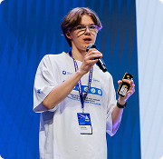
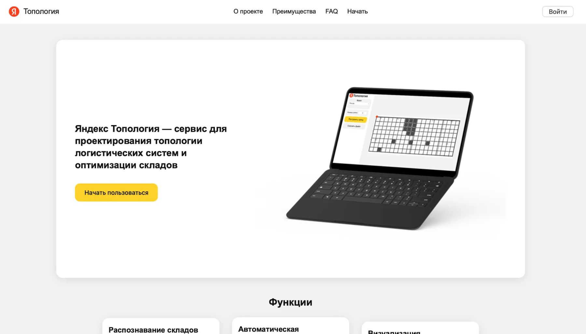
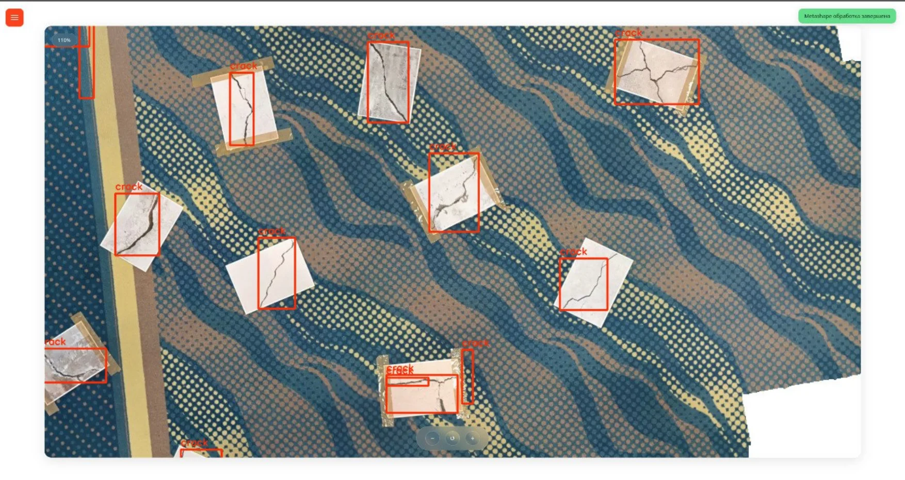
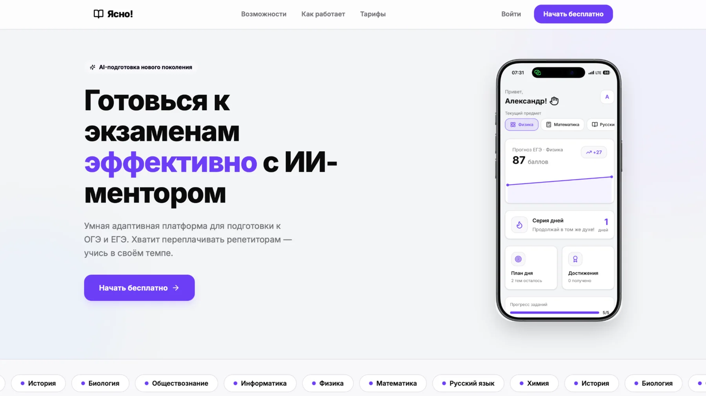
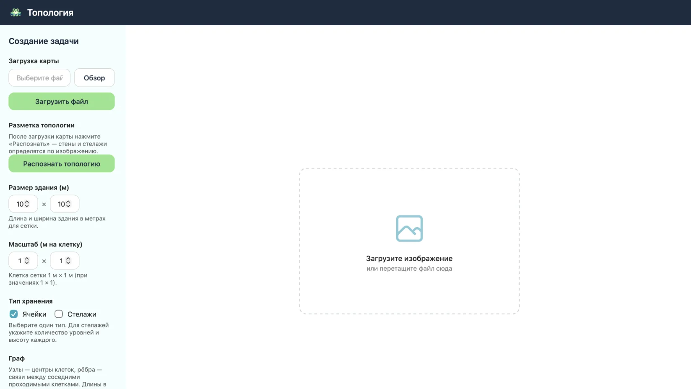
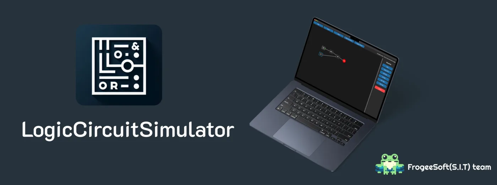
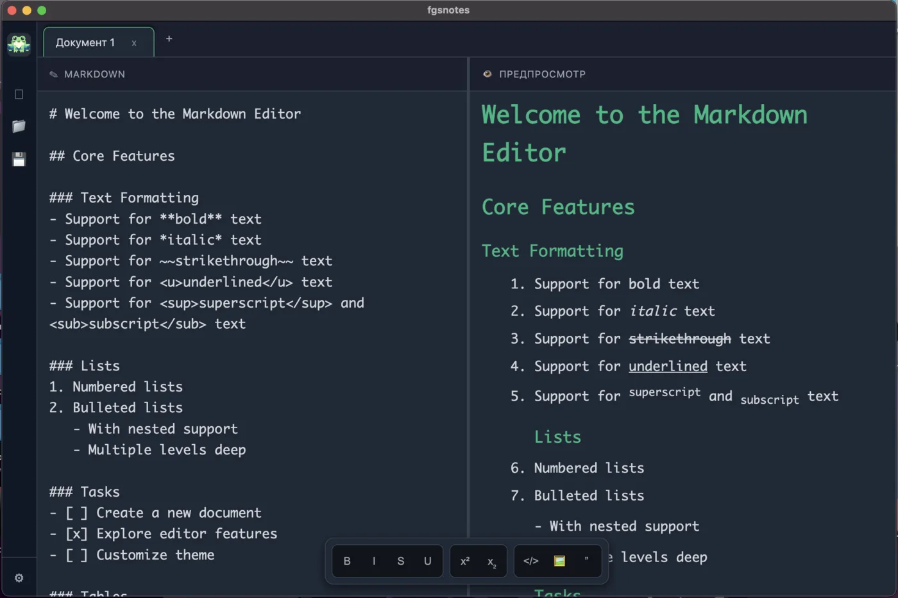
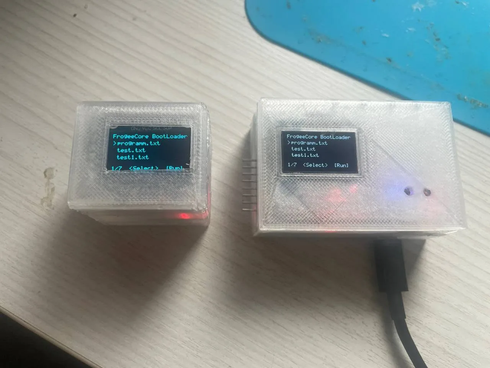

Научно-технологический университет «Сириус»
Студент 1 курса. Направления подготовки: 01.00.00 Математика и механика, 09.00.00 Информатика и вычислительная техника.
01курс
Инженер-разработчик и студент Научно-технологического университета «Сириус». Работаю с робототехникой, embedded-системами, компьютерным зрением и fullstack-продуктами.

Студент 1 курса. Направления подготовки: 01.00.00 Математика и механика, 09.00.00 Информатика и вычислительная техника.
Работа над «Яндекс Топологией»: распознавание плана помещения, генерация сетки и оптимальное размещение стеллажей, зарядных станций и рабочих зон.
Проекты мониторинга и автоматизации: обработка аэрофотосъёмки, детекция дефектов, разработка систем управления и прототипирование инженерных решений.

Яндекс · Большие вызовыСервис для проектирования роботизированных складов. Система получает план помещения, распознаёт доступные зоны, строит сетку и формирует эффективное размещение стеллажей, зарядных станций и рабочей области.

Система, созданная при поддержке ГК «Геоскан»: дрон собирает фотографии объекта, Metashape строит ортофотофасад, а YOLO находит трещины. Backend — FastAPI, интерфейс — React.
Подробнее ↗
AI-наставник для подготовки к ОГЭ и ЕГЭ: помогает разбирать учебные темы, строить план занятий и получать понятные объяснения.
Подробнее ↗
Комплекс для роботизации склада: наземный ROS-робот доставляет грузы, а модуль инвентаризации распознаёт план, строит граф, прокладывает маршруты и считывает QR-коды с помощью Geoscan Pioneer.

Графический редактор цифровых схем с drag-and-drop, логическими элементами и симуляцией сигналов в реальном времени.
Подробнее ↗
Кроссплатформенный Markdown-редактор с предпросмотром, подсветкой синтаксиса, темами, вкладками и системой плагинов.
Подробнее ↗
Платформа для быстрого прототипирования embedded- и IoT-устройств: собственный модуль, редактор кода, язык сценариев и набор встроенных библиотек.
Подробнее ↗Больше desktop-, web-, embedded- и робототехнических проектов — в профиле GitHub.
Все репозитории ↗Разбираюсь в задаче, ограничениях и реальном сценарии использования.
Определяю компоненты, протоколы, алгоритмы и пользовательские интерфейсы.
Собираю минимальную рабочую версию и проверяю ключевые гипотезы.
Тестирую систему в реальных условиях и довожу до стабильного результата.
FrogeeSoft / S.I.T — мой личный технологический проект. В его рамках я создаю инструменты для разработчиков, проектирую электронные устройства, собираю робототехнические системы и проверяю идеи на инженерных соревнованиях и хакатонах.
Также я развиваю образовательную платформу sit-edu.ru, веду канал проекта и публикую материалы о разработке, робототехнике, электронике и собственных экспериментах.
Открыт к стажировке, первой работе, соревнованиям и совместной разработке технологических продуктов.